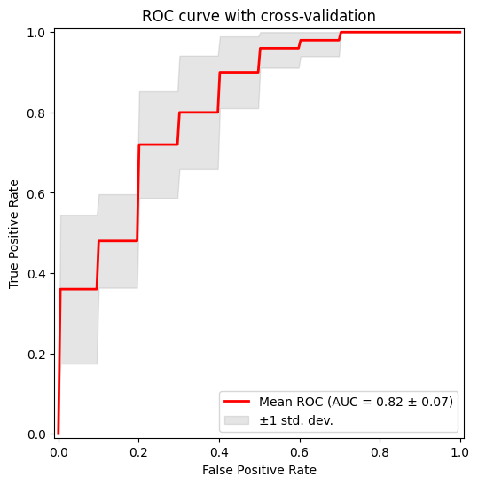

from sklearn.svm import SVCMetrics
Metric tracking and analysis tools
get_metric
def get_metric(
metric_cls, backend:str='monai', args:VAR_POSITIONAL, kwargs:VAR_KEYWORD
):
Regression metrics
SSIMMetric
def SSIMMetric(
spatial_dims:int, data_range:float=1.0, kernel_type:KernelType | str=gaussian, win_size:int | Sequence[int]=11,
kernel_sigma:float | Sequence[float]=1.5, k1:float=0.01, k2:float=0.03, reduction:MetricReduction | str=mean,
get_not_nans:bool=False
)->None:
Computes the Structural Similarity Index Measure (SSIM).
.. math:: (x,y) = _y^2 + c_1)(_x^2 + _y^2 + c_2)}
For more info, visit https://vicuesoft.com/glossary/term/ssim-ms-ssim/
SSIM reference paper: Wang, Zhou, et al. “Image quality assessment: from error visibility to structural similarity.” IEEE transactions on image processing 13.4 (2004): 600-612.
Args: spatial_dims: number of spatial dimensions of the input images. data_range: value range of input images. (usually 1.0 or 255) kernel_type: type of kernel, can be “gaussian” or “uniform”. win_size: window size of kernel kernel_sigma: standard deviation for Gaussian kernel. k1: stability constant used in the luminance denominator k2: stability constant used in the contrast denominator reduction: define the mode to reduce metrics, will only execute reduction on not-nan values, available reduction modes: {"none", "mean", "sum", "mean_batch", "sum_batch", "mean_channel", "sum_channel"}, default to "mean". if “none”, will not do reduction get_not_nans: whether to return the not_nans count, if True, aggregate() returns (metric, not_nans)
PSNRMetric
def PSNRMetric(
max_val:int | float, reduction:MetricReduction | str=mean, get_not_nans:bool=False
)->None:
Compute Peak Signal To Noise Ratio between two tensors using function:
.. math:: (Y, ) = 20 _{10} ({}Y)
-10 {10}()
More info: https://en.wikipedia.org/wiki/Peak_signal-to-noise_ratio
Help taken from: https://github.com/tensorflow/tensorflow/blob/master/tensorflow/python/ops/image_ops_impl.py line 4139
Input y_pred is compared with ground truth y. Both y_pred and y are expected to be real-valued, where y_pred is output from a regression model.
Example of the typical execution steps of this metric class follows :py:class:monai.metrics.metric.Cumulative.
Args: max_val: The dynamic range of the images/volumes (i.e., the difference between the maximum and the minimum allowed values e.g. 255 for a uint8 image). reduction: define the mode to reduce metrics, will only execute reduction on not-nan values, available reduction modes: {"none", "mean", "sum", "mean_batch", "sum_batch", "mean_channel", "sum_channel"}, default to "mean". if “none”, will not do reduction. get_not_nans: whether to return the not_nans count, if True, aggregate() returns (metric, not_nans).
MAEMetric
def MAEMetric(
reduction:MetricReduction | str=mean, get_not_nans:bool=False
)->None:
Compute Mean Absolute Error between two tensors using function:
.. math:: (Y, ) =_{i=1}^{n}|y_i-|.
More info: https://en.wikipedia.org/wiki/Mean_absolute_error
Input y_pred is compared with ground truth y. Both y_pred and y are expected to be real-valued, where y_pred is output from a regression model.
Example of the typical execution steps of this metric class follows :py:class:monai.metrics.metric.Cumulative.
Args: reduction: define the mode to reduce metrics, will only execute reduction on not-nan values, available reduction modes: {"none", "mean", "sum", "mean_batch", "sum_batch", "mean_channel", "sum_channel"}, default to "mean". if “none”, will not do reduction. get_not_nans: whether to return the not_nans count, if True, aggregate() returns (metric, not_nans).
MSSIMMetric
def MSSIMMetric(
spatial_dims:int, data_range:float=1.0, kernel_type:KernelType | str=gaussian,
kernel_size:int | Sequence[int]=11, kernel_sigma:float | Sequence[float]=1.5, k1:float=0.01, k2:float=0.03,
weights:Sequence[float]=(0.0448, 0.2856, 0.3001, 0.2363, 0.1333), reduction:MetricReduction | str=mean,
get_not_nans:bool=False
)->None:
Computes the Multi-Scale Structural Similarity Index Measure (MS-SSIM).
MS-SSIM reference paper: Wang, Z., Simoncelli, E.P. and Bovik, A.C., 2003, November. “Multiscale structural similarity for image quality assessment.” In The Thirty-Seventh Asilomar Conference on Signals, Systems & Computers, 2003 (Vol. 2, pp. 1398-1402). IEEE
Args: spatial_dims: number of spatial dimensions of the input images. data_range: value range of input images. (usually 1.0 or 255) kernel_type: type of kernel, can be “gaussian” or “uniform”. kernel_size: size of kernel kernel_sigma: standard deviation for Gaussian kernel. k1: stability constant used in the luminance denominator k2: stability constant used in the contrast denominator weights: parameters for image similarity and contrast sensitivity at different resolution scores. reduction: define the mode to reduce metrics, will only execute reduction on not-nan values, available reduction modes: {"none", "mean", "sum", "mean_batch", "sum_batch", "mean_channel", "sum_channel"}, default to "mean". if “none”, will not do reduction get_not_nans: whether to return the not_nans count, if True, aggregate() returns (metric, not_nans)
RMSEMetric
def RMSEMetric(
reduction:MetricReduction | str=mean, get_not_nans:bool=False
)->None:
Compute Root Mean Squared Error between two tensors using function:
.. math:: (Y, ) ={ }
= .
More info: https://en.wikipedia.org/wiki/Root-mean-square_deviation
Input y_pred is compared with ground truth y. Both y_pred and y are expected to be real-valued, where y_pred is output from a regression model.
Example of the typical execution steps of this metric class follows :py:class:monai.metrics.metric.Cumulative.
Args: reduction: define the mode to reduce metrics, will only execute reduction on not-nan values, available reduction modes: {"none", "mean", "sum", "mean_batch", "sum_batch", "mean_channel", "sum_channel"}, default to "mean". if “none”, will not do reduction. get_not_nans: whether to return the not_nans count, if True, aggregate() returns (metric, not_nans).
Segmentation metrics
DiceMetric
def DiceMetric(
threshold:float=0.5, instance:bool=False, kwargs:VAR_KEYWORD
):
Wrapper around monai.metrics.DiceMetric Works for binary segmentation with 1-channel logits. Accepts all keyword arguments supported by monai.metrics.DiceMetric Example: DiceMetric( include_background=False, reduction=“mean”, get_not_nans=False, ignore_empty=True )
PanopticQualityMetric
def PanopticQualityMetric(
kwargs:VAR_KEYWORD
):
Wrapper around monai.metrics.PanopticQualityMetric.
Expects: pred : (B, C, H, W) logits target: (B, H, W) or (B, 1, H, W) panoptic map Each pixel contains encoded panoptic label (semantic + instance id).
All kwargs are forwarded to MONAI PanopticQualityMetric.
Classification Metrics
ROCAUCMetric
def ROCAUCMetric(
num_classes:NoneType=None, # if not None, checks if preds and targets are one-hot encoded
act:NoneType=None, # activation operations, typically Sigmoid or Softmax.
kwargs:VAR_KEYWORD
):
Wrapper around monai.metrics.ROCAUCMetric.
If num_classes is None: assumes pred and target are already one-hot / probability encoded.
If num_classes is provided: automatically one-hot encodes pred/target when needed.
ROC Curve
plot_roc_curve_with_std
def plot_roc_curve_with_std(
y_probs_folds, # Predicted probabilities for the positive class per fold.
y_true_folds, # Ground truth labels per fold.
n_points:int=200, # Resolution of interpolated ROC curve.
show_folds:bool=False, # Whether to display individual fold curves.
title:str='ROC curve with cross-validation', # Plot title.
):
Plot ROC curves across CV folds with mean ROC and ±1 std band.
plot_roc_curve_with_std_interactive
def plot_roc_curve_with_std_interactive(
y_probs_folds, y_true_folds, n_points:int=200, show_folds:bool=True, title:str='ROC curve with cross-validation'
):
Example
Plot of the ROC curve for the data after applying cross-validation and training in order to visualize the standard deviation to compare between splits.
# -----------------------------------------------------------------------------
# 1. Load and preprocess data
# -----------------------------------------------------------------------------
iris = load_iris()
X, y = iris.data, iris.target
# Keep only two classes (binary classification)
mask = y != 2
X, y = X[mask], y[mask]
n_samples, n_features = X.shape
# -----------------------------------------------------------------------------
# 2. Feature augmentation (noise injection for high-dimensional setting)
# -----------------------------------------------------------------------------
rng = np.random.RandomState(0)
noise = rng.randn(n_samples, 300 * n_features)
X = np.concatenate([X, noise], axis=1)
# -----------------------------------------------------------------------------
# 3. Cross-validation setup
# -----------------------------------------------------------------------------
cv = StratifiedKFold(n_splits=5, shuffle=True, random_state=0)
# -----------------------------------------------------------------------------
# 4. Model
# -----------------------------------------------------------------------------
model = SVC(kernel="linear", probability=True, random_state=0)
# -----------------------------------------------------------------------------
# 5. Cross-validated predictions
# -----------------------------------------------------------------------------
y_probs_folds = []
y_true_folds = []
for train_idx, test_idx in cv.split(X, y):
X_train, X_test = X[train_idx], X[test_idx]
y_train, y_test = y[train_idx], y[test_idx]
model.fit(X_train, y_train)
probs = model.predict_proba(X_test)[:, 1]
y_probs_folds.append(probs)
y_true_folds.append(y_test)
# -----------------------------------------------------------------------------
# 6. Evaluation
# -----------------------------------------------------------------------------
plot_roc_curve_with_std(
y_probs_folds,
y_true_folds
)
plot_roc_curve_with_std_interactive(
y_probs_folds,
y_true_folds
);
Metrics Reloaded
Metrics Reloaded is a comprehensive recommendation framework designed to help researchers and practitioners in biomedical image analysis select and apply the most appropriate performance metrics for their specific tasks. Traditional validation practices often rely on a few standard metrics (e.g., Dice score, IoU), which might not always reflect the domain-specific interests or characteristics of a particular problem — such as class imbalance, object size, boundary importance, or task type (classification, segmentation, detection). (Nature)
At its core, Metrics Reloaded introduces the concept of a problem fingerprint: a structured representation of properties relevant to metric selection (e.g., whether the problem is semantic segmentation vs. object detection, the importance of boundary accuracy, class prevalence, etc.). Using the problem fingerprint, the framework guides users through a systematic decision process to identify a set of suitable metrics that align with both the task and domain interest. (Nature)
Metrics Reloaded supports a broad range of image analysis tasks, including:
- Image-level classification
- Semantic segmentation
- Object detection
- Instance segmentation
To make the selection process more accessible, Metrics Reloaded is also available as an interactive online tool, where users can explore the framework’s recommendations and walk through the metric selection process based on their problem fingerprint: https://metrics-reloaded.dkfz.de/ — Metrics Reloaded online tool (metrics-reloaded.dkfz.de)
This tool provides a user-centric way to explore metric strengths, weaknesses, and recommendations tailored to different imaging tasks and validation challenges.
MetricsReloadedCategorical
def MetricsReloadedCategorical(
metric_name, kwargs:VAR_KEYWORD
):
Categorical pairwise metrics of MetricsReloaded library
MetricsReloadedBinary
def MetricsReloadedBinary(
metric_name, kwargs:VAR_KEYWORD
):
Binary pairwise metrics of MetricsReloaded library
Fourier Ring Correlation
Fourier Ring Correlation (FRC) is a frequency-domain method used to quantify the similarity between two independent measurements of the same underlying signal. It is widely applied in fields such as microscopy, cryo-electron microscopy, and super-resolution imaging to estimate spatial resolution in a statistically robust manner. By comparing corresponding Fourier components over concentric rings (in 2D) or shells (in 3D) of equal spatial frequency, FRC provides a frequency-dependent correlation profile that reflects the reproducibility of structural information.
Mathematically, the Fourier ring correlation at spatial frequency ( r ) is defined as:
FRC(r) = \frac{\sum_{k \in r} F_1(k) \overline{F_2(k)}}{\sqrt{\left(\sum_{k \in r} |F_1(k)|^2\right) \left(\sum_{k \in r} |F_2(k)|^2\right)}}
where $ F_1(k) $ and $ F_2(k) $ are the Fourier transforms of the two independent images, $ k $ denotes frequency coordinates lying on a ring of radius $ r $, and the overline indicates complex conjugation. The numerator measures cross-correlation of corresponding Fourier coefficients, while the denominator normalizes by their respective spectral energies.
A function that calculates an FRC-based metric determines a resolution criterion by identifying where the FRC curve crosses the predefined threshold at 1/7.
The resulting FRC curve provides a frequency-resolved measure of signal consistency, and the derived cutoff frequency can be converted into a spatial resolution estimate.
FRCMetric
def FRCMetric(
image1, image2
):
Metric derived from FRC loss.